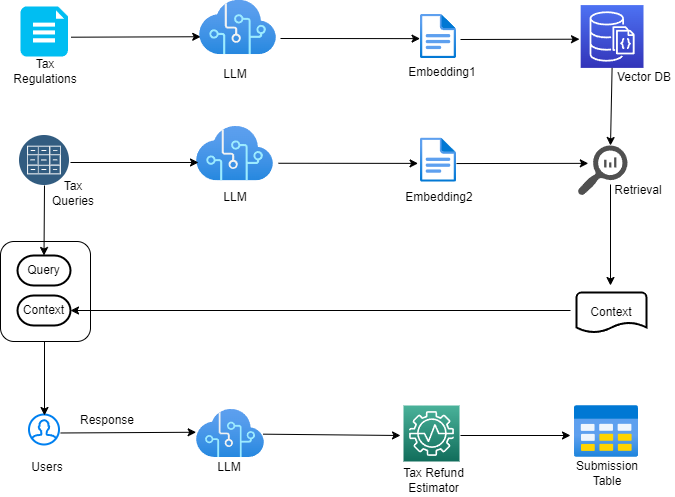

Abstract
In recent years, the integration of artificial intelligence in financial services has led to the emergence of advanced tax advisory systems.
This project seeks to develop a Tax Advisory Agent(ElsterGPT) leveraging Large Language Models (LLMs) for maximizing tax return. The agent is designed to assist individuals and businesses in navigating complex tax regulations, providing real-time, accurate, and personalized tax advice.
The effectiveness of the agent is achieved through fine-tuned LLM's contextual natural language processing capabilities and accurate retrival of relevant tax laws from vector database. By incorperating extensive tax laws, regulations, and case precedents in Machine Learning(ML) model during drafting and reviewing tax documents a higher-quality of decision-making will be significantly enhanced.
Business Model
Objective
This LLM-powered Tax Advisory Agent aims to provide top-notch guidance for all tax needs with AI-driven solutions including tax advisory service and tax filing service, which significantly reduces the time and costs associated with traditional tax consultancy services.
What makes it stand out is its ability to provide personalized tax advice and unique expertise tailored for small businesses with accuracy.
Key Ideas
The key idea behind the ElsterGPT is its contextual understanding and capabilities to handle complex tax scenarios and multilingual support. Key usage ideas for this Tax Advisory Agent are:
1. Personalized Tax Guidance
The agent can provide tailored tax advice based on individual or business-specific financial situations, taking into account factors such as income, expenses, deductions, and credits to optimize tax outcomes.
2. Real-Time Tax Queries
Users can ask the agent tax-related questions at any time, receiving immediate and accurate responses. This can be particularly useful during tax season when timely information is critical.
3. Filing Assistance
The agent can guide users through the tax filing process step-by-step, ensuring that all necessary forms are completed correctly and all potential deductions and credits are claimed.
4. Regulation Updates
The agent can keep users informed about the latest changes in tax laws and regulations, helping them stay compliant and take advantage of new tax-saving opportunities.
5. Audit Preparation
In the event of a tax audit, the agent can help users prepare by explaining the process, advising on necessary documentation, and offering strategies to address potential auditor questions.
Technical Architecture

1. Tax Regulation Data Ingestion: clean and preprocess tax regulation data with fine tuned LLM model and store final embeddings in vector database.
2. Tax Query Embedding: Extract and convert german tax query from ELSTER system with specific LLM model.
3. Query Augmentation: Retrive additional context from vector database and combined with original query for users.
4. User Interaction: users are able to select best-fit tax response, which will be further optimized with LLM for tax submission.